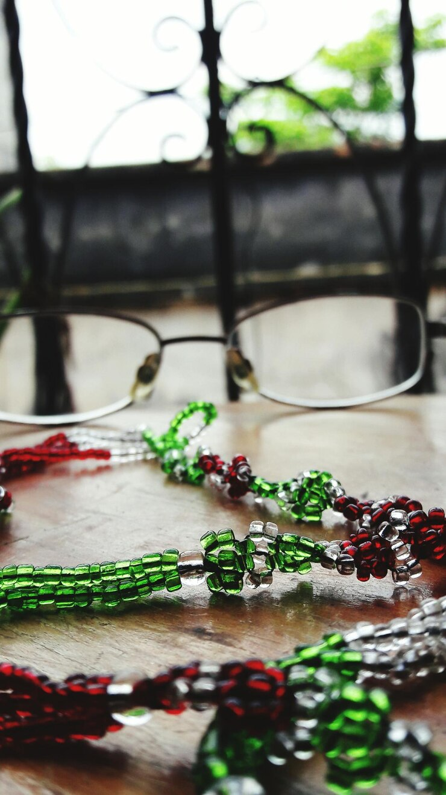
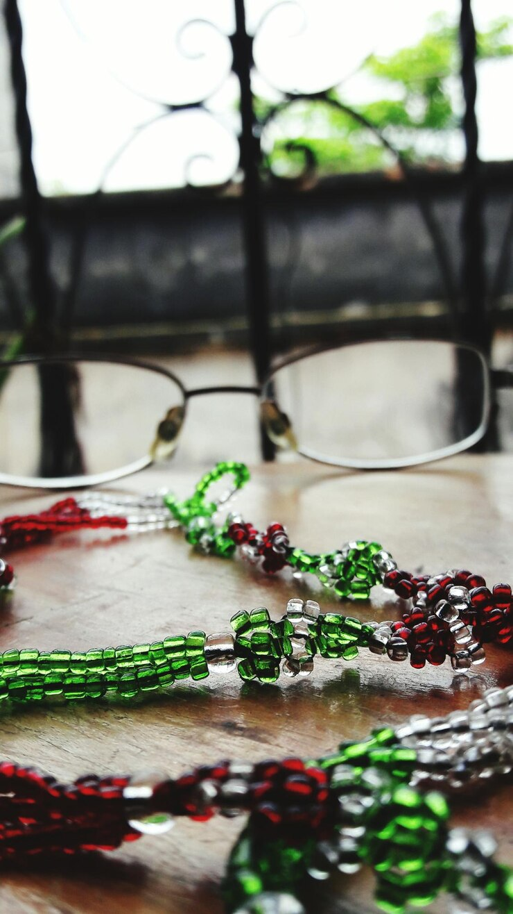
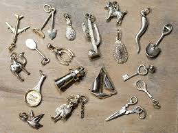
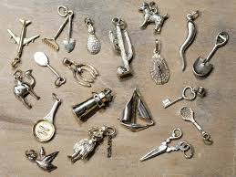

Waist Beads, . A single or multiple strands of beads made from various kinds of glass, metal, crystal, bone,
and wooden beads worn around the waist and stomach. This is an ancient tradition originating
in Africa, worn for many reasons like expression of femininity, healing, protection, rites of passage during puberty,
baby naming ceremony, maintaining the figure, and intimacy with a husband or lover.
Rather worn for traditional reasons or fashion waist beads are the perfect tool to tap into
the spirit of our ancestors while looking and feeling beautiful from the inside out.
-Elbaydoh
 



 
